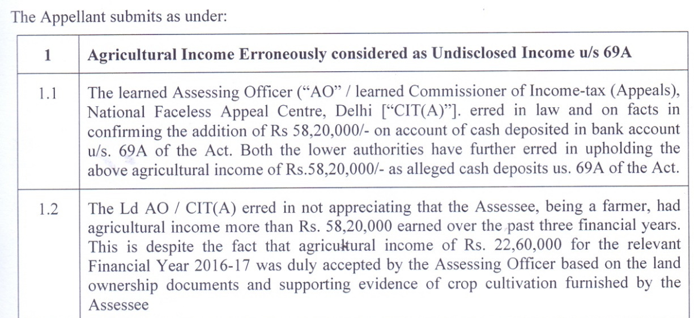
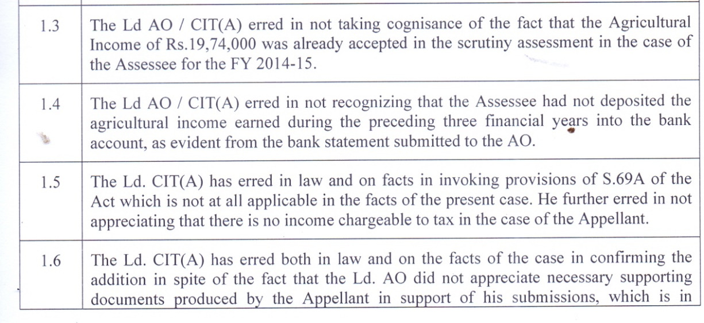
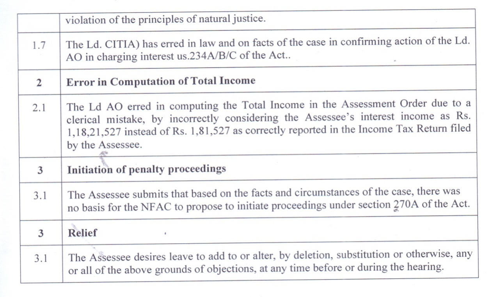

IN THE INCOME TAX APPELLATE TRIBUNAL
"B''BENCH: BANGALORE
BEFORE SHRI WASEEM AHMED, ACCOUNTANT MEMBER
AND
SHRI KESHAV DUBEY, JUDICIAL MEMBER
ITA No.1732/Bang/2025
Assessment Year : 2017-18
| P Mr. Muninarasaiah Ramesh No.P-32, 25th Main Road JP Nagar I Phase Bengaluru 560 078 AN No. ADJPR9253Q | Vs. | I TO Ward 4(3)(3) Bengaluru |
| APPELLANT | RESPONDENT |
Appellant by : CA. Harsha M., A.R.
Respondent by : Sri Madhav Nanasaheb Deshmukh, Addl.CIT-DR
Date of Hearing : 01.06.2026
Date of Pronouncement : 10.08.2026
O R D E R
PER KESHAV DUBEY, JUDICIAL MEMBER:
This appeal at the instance of the assessee is directed against the order of the ld. CIT(A)/NFAC dated 17/07/2025 vide DIN & Order No. ITBA/NFAC/S/250/2025-26/1078616649(1) passed u/s 250 of the Income Tax Act, 1961 (in short "the Act") for the assessment year 2017-18.
2. The assessee has raised the following grounds of appeal:-ITA No.1732/Bang/2025 Mr. Muninarasaiah Ramesh, BengaluruPage 2 of 8



ITA No.1732/Bang/2025 Mr. Muninarasaiah Ramesh, Bengaluru Page 3 of 83. Brief facts of the case are that the assessee filed his return of income for the AY 2017-18 on 21/12/2017 by declaring total income of Rs.4,73,730/- and agricultural income of Rs.22,62,000/-.
Subsequently, the case of the assessee was selected for complete scrutiny under CASS to examine "Cash deposits during demonetization period". Accordingly, the notices u/s. 143(2) as well as 142(1) of the Act were issued calling for information with respect to CASS reasons. During the course of assessment proceedings, the assessee was asked to explain the sources of cash deposits made during the relevant period. In response, the assessee submitted the details along with the copy of bank account statement and copy of return of income. The assessee also submitted that the entire cash deposits were made out of his agricultural income earned. The AO observed that the assessee had declared agricultural income of Rs.22,62,000/- only for the AY 2017-18, however, the assessee had made total cash deposits
amounting to Rs.80,82,000/- in 3 nos. of bank accounts as under:-
| Bank | Account | Amount in Rs. |
| Karnataka Bank Ltd | 0612500100923501 | 2,50,000/- |
| State Bank of India | 20271353763 | 75,82,000/- |
| Sree Thyagaraja Co-operative Bank | TC8SBA0002679 | 2,50,000/- |
| TOTAL | 80,82,000/- |
Further, the AO also noted that the assessee had not produced any copies of bills and vouchers to corroborate his claims. In the absence of any cogent material, satisfactory explanation and substantive documentary evidence being furnished by the assessee, the AO added the balance cash deposits of Rs.58,20,000/- (Rs.80,82,000/- – Rs.22,62,000/-) as unexplained money u/s. 69A of the Act r.w.s. 115BBE of the Act and accordingly concluded the assessment proceeding by passing order u/s. 143(3) of the Act dated 18/11/2019.ITA No.1732/Bang/2025 Mr. Muninarasaiah Ramesh, BengaluruPage 4 of 8
4. Aggrieved by the assessment completed u/s. 143(3) of the Act dated 18/11/2019, the assessee preferred an appeal before the ld.CIT(A)/NFAC.
5. The ld.CIT(A)/NFAC also dismissed the appeal of the assessee by holding that the assessee has not submitted any bills and vouchers relating to assessee's agricultural income and expenditures related to agricultural activities. Further, the ld.CIT(A)/NFAC also held that it is not reasonable to accept that the assessee has kept a huge amount of cash of Rs.80,82,000/- in his house to construct a house on the farm land. Hence, in the absence of satisfactory explanation and substantive documentary evidence, the addition of Rs.58,20,000/- as made u/s. 69A of the Act r.w.s 115BBE of the Act was confirmed.
6. Again, aggrieved by the order of the ld. CIT(A)/NFAC, dated 17/07/2025, the assessee filed the present appeal before this Tribunal. The assessee had also filed a paper book comprising of 147 pages contenting therein the various documents/record relied upon by the assessee.
7. Before us, the ld. A.R. of the assessee vehemently submitted that the assessee is full time engaged in performing agricultural activities for more than 20 years. Further, it is submitted that the authorities below have accepted the agricultural income of Rs.22,62,000/- earned during the year under the consideration and therefore the source of income being agricultural is not a dispute. It is also contended that the balance cash deposits of Rs.58,20,000/- was earned over the past 3 financial years. The assessee also produced the land ownership documents and supporting evidence of crop cultivation before the authorities below. Further, the ld. A.R. of the assessee submitted that the agricultural income earned by the assessee for the FY 2014-15 relevant for the AY 2015-16 amounting to Rs.19,44,000/- was also accepted by AO in the scrutiny assessment and accordingly prayed that the appeal of the assessee may be allowed as the entire cash deposits were made out of the agricultural income only.ITA No.1732/Bang/2025 Mr. Muninarasaiah Ramesh, BengaluruPage 5 of 8
8. The ld. D.R. on the other hand vehemently supported the orders of the authorities below and submitted that in the absence of cogent material, satisfactory explanation and substantive documentary evidence, the authorities below have rightly treated the balance cash deposits of Rs.58,20,000/- as unexplained money u/s. 69A of the Act. 9. We have heard the rival submissions and perused the material available on record. It is submitted before us that the assessee is fully engaged in performing agricultural activities during the past 4 financial years i.e. from FY 2013-14 to 2016-17 and earned agricultural income as detailed below:-
| Sl.No | Financial Year | Agricultural Income (in Rs.) |
| 01 | FY 2013-14 | 22,40,000/- |
| 02 | FY 2014-15 | 19,74,000/- |
| 03 | FY 2015-16 | 19,60,700/- |
| 04 | FY 2016-17 | 22,62,000/- |
| TOTAL | 84,36,700/- |
9.1 Further, we observed that the assessee's contention of source of cash deposits out of the agricultural income for the AY 2015-16 as well as for AY 2017-18 are accepted by the authorities below.ITA No.1732/Bang/2025 Mr. Muninarasaiah Ramesh, BengaluruPage 6 of 8
On perusal of the assessment order for AY 2015-16 selected for limited scrutiny to examine "cash deposit for demonetization period (09th November to 30th December) as reported as per SFT reporting", the AO passed an order u/s. 143(3) of the Act on 14/12/2017 by accepting the returned income by categorically observing the fact that the assessee had earned income of Rs.2,94,000/- from house property, Rs.24,914/- from other sources and Rs.19,74,000/- from agriculture activities. Further, on perusal of the orders of both the authorities below for the AY 2017-18 under consideration, we are surprised to observe that although both the authorities below, on the one hand have accepted the source of income of the assessee from agricultural activities & accordingly accepted the Agriculture income of Rs. 22,62,000/- declared during the year under consideration, however on the other hand stated that in the absence of cogent material, satisfactory explanation and substantive documentary evidences, the sources of cash deposits cannot be accepted.
9.2 We are also surprised to note that for the same reason i.e. "cash deposit during demonetization period", the case of the assessee was scrutinized once for AY 2015-16 by accepting the returned income & another for AY 2017-18 where the addition of Rs.58,20,000/- is made disbelieving the contentions of the assessee. We take note of the fact that during the course of assessment proceedings for AY 2015-16, the assessee was also asked to produce the details of cash deposited during the demonetization period along with the copy of the bank statement & thereafter verifying all the details furnished by the assessee, the AO had passed an order by accepting the returned income. We also observed that apart from agricultural income, the assessee has also declared the rental income from letting out the house property along with the interest income. Undisputedly, the net agricultural income of Rs.22,62,000/- as declared by the assessee in return of income filed for AY 2017-18 have been accepted by both the authorities below. Further, agricultural income of Rs.19,74,000/- for the AY 2015-16 is also accepted by the AO. The contention of the assessee is that the entire cash deposits made were out of his agriculture income accumulated over the past four FYs (FY 2013-14 to FY 2016-17) and the cash had been retained by the assessee with the specific plan of constructing a Farm House on the agriculture land. In our considered opinion, the assessee has clearly demonstrated the sources of cash in hand prior to the demonetization period. Therefore, the source of deposits of cash cannot be doubted in the absence of any contrary material brought on record by the authorities below. The assessee has clearly demonstrated by producing not only the Rights, Tenancy & Crop (RTC) but also crop certificate, list of crop cultivated along with the copies of bank statements from FY 2013-14 to FY 2016-17 towards the source of agriculture income. Further, before the ld. CIT(A)/NFAC, the assessee had also submitted the detailed reply including the cash flow statement covering the period from FY 2013-14 to FY 2016-17 substantiating the source of the cash deposits amounting to Rs.80,82,000/- made during the demonetization period, however the ld. CIT(A)/NFAC disbelieved the same by merely stating that it is strange that the assessee was keeping such a huge amount of cash with him for so many years at such a small house built on the fields. In our considered opinion, both the authorities below did not accept the contention of the assessee merely based on assumption & surmises & that too without brought in any adverse material on record. In view of the above, we are inclined to set aside the order of the ld. CIT(A)/NFAC & direct the AO to delete the entire addition of Rs. 58,20,000/- as made u/s 69A of the Act. 10. In the result, the appeal filed by the assessee is allowed.ITA No.1732/Bang/2025 Mr. Muninarasaiah Ramesh, BengaluruPage 7 of 8ITA No.1732/Bang/2025 Mr. Muninarasaiah Ramesh, BengaluruPage 8 of 8
Order pronounced in the open court on 10th Aug, 2026 Sd/- (Waseem Ahmed) Accountant Member Sd/- (Keshav Dubey) Judicial Member Bangalore, Dated 10th Aug, 2026.
VG/SPS Copy to:
1. The Applicant 2. The Respondent 3. The CIT 4. The DR, ITAT, Bangalore.
5 Guard file By order Asst. Registrar, ITAT, Bangalore.